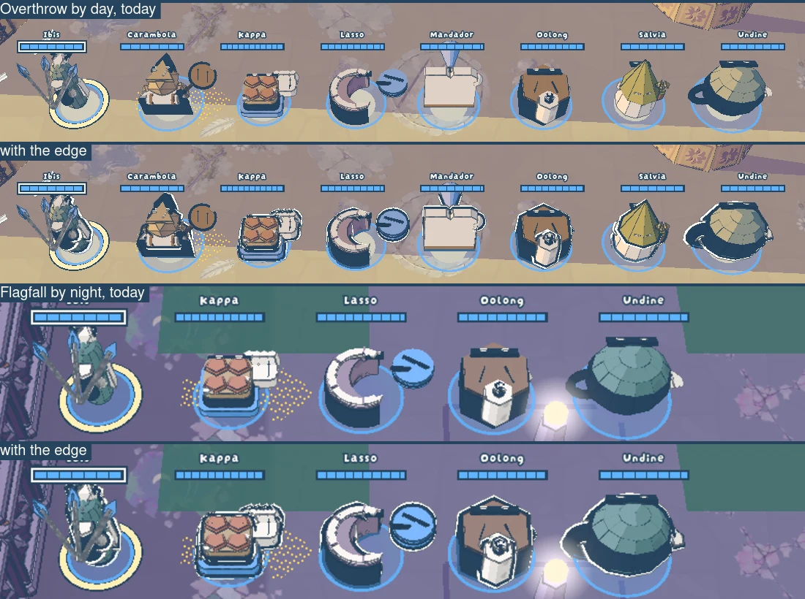
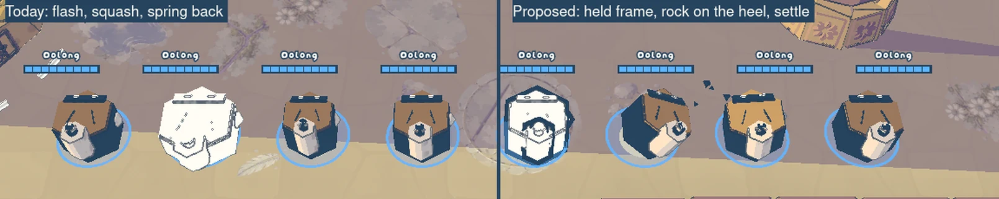
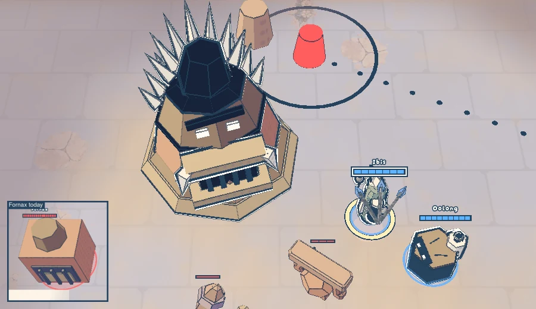

Three quick ideas for the units
To review · 2026-11-15 · thr_b5jw9pbyk3
Which of these three should I take further, and which is wrong? All three are built in the game at match zoom, as sketches, before any deep work.
One thing I found on the way in: look.md asks for thick ink on what fights and thin ink on scenery, but the game draws one hairline round everything, so a hero wears the same line as a flagstone. The first idea pays that debt, and the other two lean on it.
1. The sticker edge

Everything that fights wears a navy line three times the weight of the scenery's, and a cream hairline beyond it, so the figure carries its own dark and its own light wherever it stands: the navy cuts it out of warm sandstone by day, and the cream cuts it out of violet stone by night. Ibis is the one it does not rescue, since she is too slim and too pale for any line to save, and she wants a redraw of her own.
Draws on Mortensen's two ink drawings, where the black line is the whole figure, and on Vallotton's Loire, where every tree is one dark shape with a lit rim. The flamingos on yellow make the same case in reverse: pale birds held on a loud ground by nothing but a pen line.
2. Struck like a statue

Today a struck hero turns into a white blob and squashes like a pudding, which is where the plush comes from. Here the blow holds for three frames with the figure printed cream inside a doubled ink line, so you can still tell who was hit, and then the hero rocks back on the far edge of the base as one rigid piece, sheds a few chips of ink, tips forward once and stands; nothing in the sim moves, and no windup grows longer.
Draws on the game's own felled-statue deaths, which already say these people are carved and not stuffed, and on Smash, whose hits read because both fighters freeze for a moment before anything flies.
3. Fornax, old and sooted

A Warden grows old by what has settled on it, so the kiln stands on a worn plinth and leans four degrees off it, the soot has climbed until its crown is black, and two small pale eyes sit under a chipped brow above a door with bars for teeth. The crest down its back is every kiln stilt it has ever fired, bone-white and raked like quills, which gives it the hard angles and the pale-on-dark read that the blue giants have, and none of their fur.
Draws on the quilled blue giants (a dark mass, a pale crest, eyes no bigger than lamps), the hooded sentinel by the castle, who is dignified because he is tall, plain and perfectly still, and the lynx on the carved wall, who is old because the wall is.